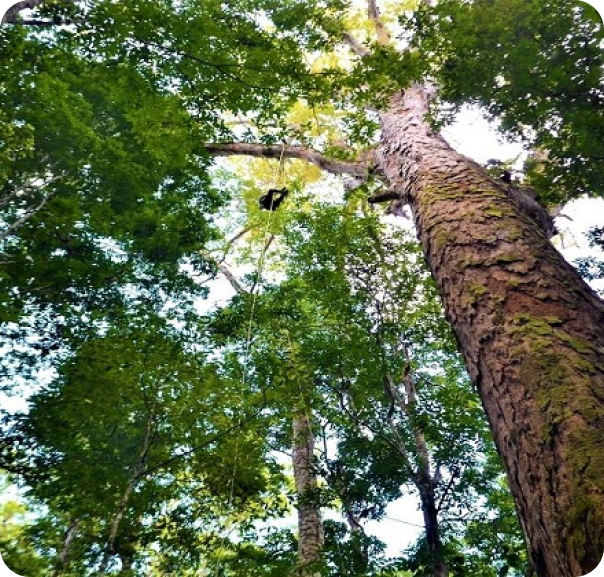

O projeto
O que fazemos?
Onde estamos?
Créditos
Bem vindo

O projeto
Há uma preocupação constante do Unisagrado com os resíduos produzidos em todas as suas atividades, porém nem todos têm consciência do que nós já fazemos. Esta preocupação com os resíduos vem de uma necessidade não só da instituição, mas um cuidado com os impactos causados no meio ambiente e com os efeitos a curto e longo prazo.